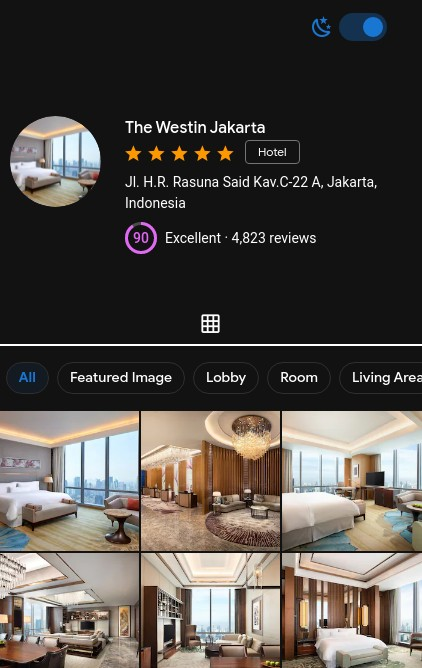

Personal project
These are projects I made for fun and learning.
Staticform.click

- Github link
- Website: staticform.click
A website that I made for people to make their own form builder website with JAMStack. I played with Tailwind CSS and Alpine.js here. I also wrote little documentation for it.
This project goes unpublished since I don't want people unknowingly share their WhatsApp number / API key freely in GitHub repo if they left it as public repo. I still feel there is a way to make this project more useful.
The staticform.click that is a valid domain that I bought, but I experience it sometimes out, so I use the netlify domain instead. I don't trust this particular domain provider anymore...
Nuxt Vuetify Hotel Gallery

A quickie one page website made for a code challenge of an interview. The image was provided by the interviewer so I'm not sure how long they will live in the internet.
Discord bot
A discord bot in progress. I and some friends make it as a side project in our Bootcamp.
Yajmaa
An unfinished CRUD git based web app that I started with the simplest stack possible: Static site generator, vanilla js and Bulma CSS to iterate as fast as possible.
Along the way I decided to add Vue.js, gulp, sharp, babel, sass, [and, more]. In the end, my initial decision to use a simple known stack became a burden and the complexity of this project was getting higher due to the unusual stack. I want to spare my brain cells from this torture so it's abandoned now.
Courses project
Fullstack JS bootcamps bite sized project
This part is projects I made for the sake of completion of JS Fullstack Bootcamp by Flavio Copes. I explored some of the projects further, nonetheless, these projects are rather simple, but it reflects some bits of understanding of each technology.
REST API with mongodb and express little project on JS fullstack bootcamp. My first iteration with actual REST API, finally
A client side react consuming GitHub REST API. Just a boring one.
A client side JS + Express consuming GitHub GraphQL API. Alright, this is my first time fetching GraphQL.
A messaging boards made with Redis and express. This is my first exposure with redis. Pretty neat.
Consuming airtable API. Just that.
RSS reader made with Next.js. I just copied most of our Instructor code. But due to Next.js version just incremented to 11, the code has error and some fix was performed. It's a great framework!
PHP & MYSQL Ninja Course Project
This is the most complex project that I attended to. It's based on a book from Sitepoint. The entire book is one big project of CRUD app made with vanilla PHP, no library.
It's quite hard to finish this course, zero library... Ow, man... I am a confused ninja now. I learned a lot and I gained some appreciation of object oriented PHP. I also learned some cool SQL ninja skill.
PHP sure has changed and gained some static typing ability, but I still felt that PHP as a language is harder to learn correctly.
Laravel
This is a project based on traversy media "Laravel Crash Course" video. I found that Laravel is amazing monolithic framework. So much magic that helps you iterate faster! The ORM is OK and many people praise it to the sky. It's PHP though 😞.
Django
This is my take on django official tutorial. And my first python project. Still in progress..